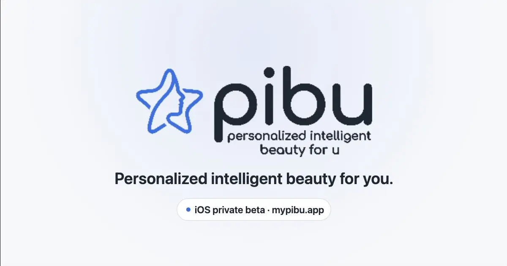

PRODUCTION · iOSPibu
An AI skincare companion that turns a guided photo check-in into clear, trackable insights.
Built and shipped the product using React Native, Expo, Supabase, Deno Edge Functions, and Vertex AI. I led a four-person team while owning product engineering, system integration, data flow, debugging, privacy safeguards, QA, and App Store delivery.
React NativePostgreSQLVertex AIEdge Functions